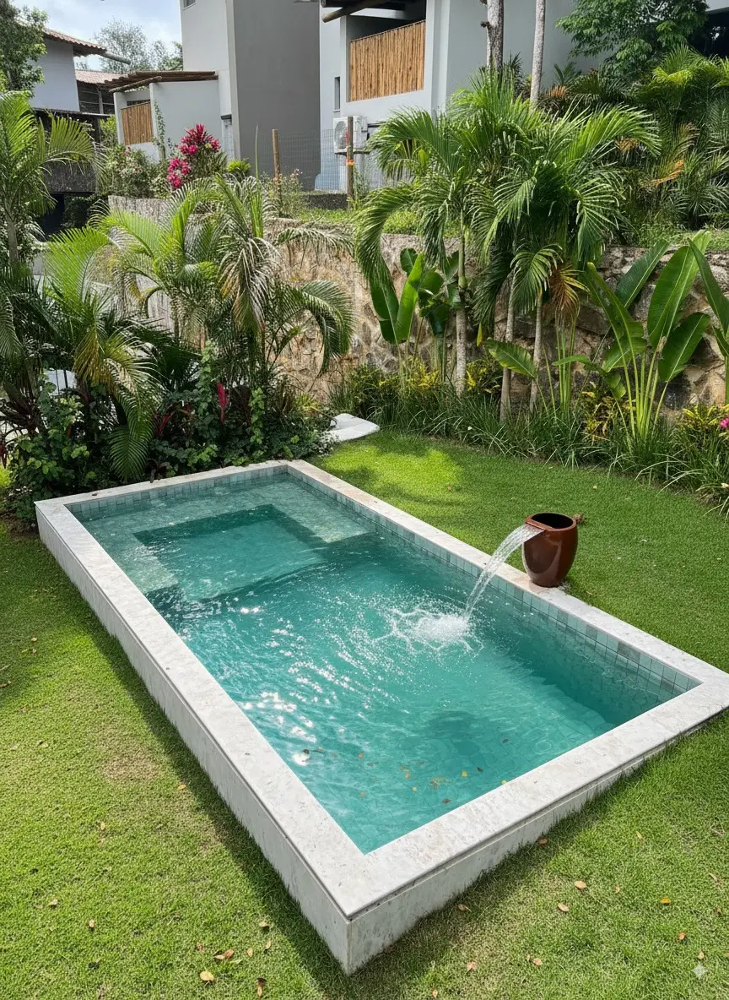

Piscinas de fibra
Modelos para diferentes espaços, com orientação para escolher a melhor opção para sua família.

Piscinas, spas e áreas de lazer em Simões Filho
Pensando em uma piscina de fibra ou spa em Simões Filho? Reúna fotos do quintal, das passagens e medidas aproximadas para entender quais modelos podem ser avaliados e como solicitar um orçamento.
O tamanho do quintal é apenas uma parte do planejamento. Para solicitar uma piscina em Simões Filho, observe as condições de entrada do casco, os desníveis, a área de circulação e a infraestrutura disponível. A Linha Verde orienta a comparação de modelos e avalia as necessidades iniciais do projeto.
Modelos para diferentes espaços, com orientação para escolher a melhor opção para sua família.
Mais conforto e bem-estar para transformar sua casa em um ambiente de descanso.
Envie sua cidade, fotos do espaço e medidas aproximadas para iniciar o atendimento.
Trajeto entre a rua e o quintal: anote a largura dos portões e corredores e fotografe muros, coberturas, garagens estreitas e obstáculos. O casco precisa chegar à área de instalação; a movimentação depende de avaliação de logística.
Medidas e desníveis: informe o comprimento e a largura livres, além de inclinações visíveis. Considere também área para circulação, bordas e manutenção. Fotos e medidas iniciais não substituem uma verificação técnica do terreno.
Preparação e infraestrutura: drenagem, nivelamento, condições do solo e pontos elétricos e hidráulicos podem alterar o escopo. Serviços especializados devem ser avaliados por profissionais habilitados quando necessário.
Proposta de instalação: confirme quais itens estão incluídos: modelo, transporte, equipamentos, mão de obra, preparação, acabamento, garantias e responsabilidades por serviços adicionais.
Informe o bairro, o uso desejado para a piscina, fotos do espaço e do percurso desde a rua, medidas aproximadas e se existem regras de condomínio. A equipe poderá orientar sobre os próximos passos, mas disponibilidade, preço e prazo dependem da avaliação do projeto.
Continue pesquisando
Dúvidas frequentes
Sim. A Linha Verde recebe solicitações de orçamento para piscinas e spas em Simões Filho, sujeitas à confirmação da disponibilidade de atendimento e da logística.
É necessário avaliar como o casco chegará ao local. Portões, corredores, muros, coberturas e desníveis podem influenciar as possibilidades de entrega e movimentação.
Informe comprimento e largura da área livre, dimensões das passagens e desníveis conhecidos, além de fotos amplas. A avaliação técnica poderá solicitar outras informações.
Isso depende das condições locais, da drenagem e do modelo escolhido. A necessidade de nivelamento, intervenções e instalações complementares deve ser confirmada tecnicamente.
Confira os itens incluídos e excluídos: casco, transporte, instalações, equipamentos, preparação do solo, acabamento, garantias e serviços adicionais.